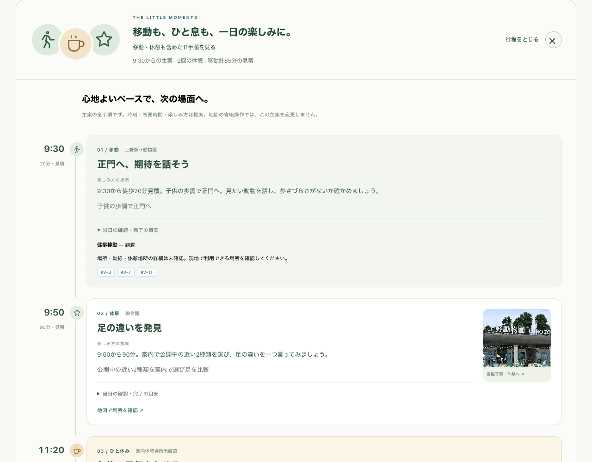
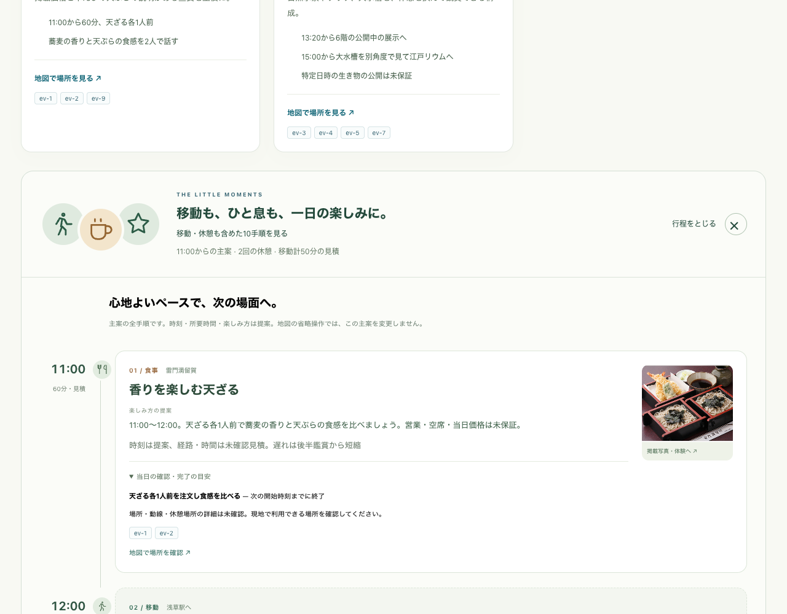
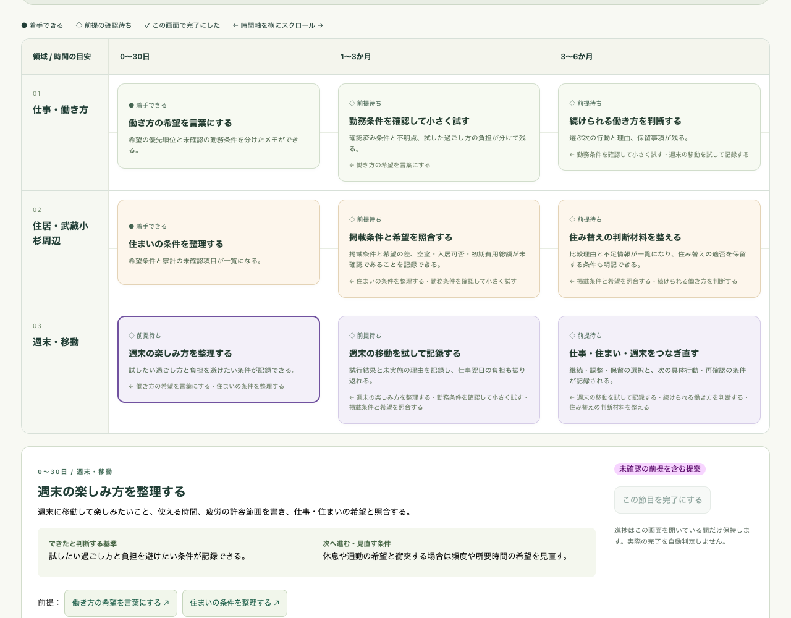

01 / FAMILY DAY動物と科学をつなぐ、上野の一日。保存済み調査回答から実生成。11手順すべてに場面の見出しと過ごし方を付け、写真と地図につなげました。11場面の旅行回答を見る ↗
02 / DAY FOR TWO蕎麦と水の世界へ、浅草・押上の2人旅。公式ページから新規調査し、写真付き体験と移動・2回の休憩を実生成。元の主案と未確認事項を保持しています。2人旅の生成回答を見る ↗
03 / NEXT CHAPTER仕事・住まい・週末を、小さな一歩から。サンプル相談を新規実行。3つの領域と3つの時期に分け、完了条件と前提を持つ9節目をモデルが生成しました。人生ロードマップを見る ↗